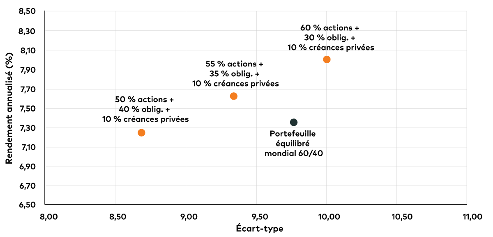

Le dilemme que posent les titres à revenu fixe
Le dilemme que posent les titres à revenu fixe
Stratégies susceptibles de rehausser le volet « 40 » d’un portefeuille de placement 60/40.
Le secteur des placements adhère depuis longtemps aux vertus du modèle de répartition de l’actif 60/40, qui consiste à investir 60 % d’un portefeuille dans des actions et 40 % dans des obligations. Depuis quelques décennies, le modèle a composé avec des crises financières et des bulles boursières et largement récompensé les investisseurs pour leur confiance, leur procurant constamment un équilibre sain entre de solides rendements et une atténuation raisonnable du risque au fil du temps. Aujourd’hui pourtant, de plus en plus d’investisseurs remettent en question le bien-fondé de ce modèle, et une grande partie de leurs préoccupations portent sur le volet « 40 ». Compte tenu de la faiblesse des taux de rendement obligataires et de la possibilité que la hausse des taux d’intérêt entraîne une volatilité des cours, bon nombre se demandent si les obligations peuvent encore procurer les rendements ou la protection contre les baisses qui les ont caractérisées, et s’il est temps de réexaminer la pondération simple de 40 % en titres à revenu fixe, dans un portefeuille équilibré.
Nous comprenons leur point de vue : dans le contexte actuel, il serait prudent pour les investisseurs d’envisager des façons de générer un taux de rendement et d’atténuer le risque qui ne se limitent pas à la simple répartition de 40 % de l’actif, dans des obligations traditionnelles. Nous estimons aussi, toutefois, qu’il est pertinent de se demander (peut-être avant tout) quels actifs devraient composer le volet des titres à revenu fixe, plutôt que de s’interroger sur leur pondération générale dans un portefeuille. Outre les obligations traditionnelles, il existe certaines options qui peuvent procurer des stratégies susceptibles de tirer davantage parti des titres à revenu fixe, même en cette période très difficile – à condition que les investisseurs soient disposés à penser quelque peu différemment.
Avant d’explorer ces possibilités, examinons quel rôle les obligations sont censées jouer dans un portefeuille. Historiquement, elles ont eu deux buts essentiels : procurer un rendement et atténuer la volatilité. Il serait possible d’investir la totalité d’un portefeuille dans des actions, ce qui produirait invariablement des rendements plus élevés sur des périodes suffisamment longues. Pourtant, très peu d’investisseurs ont le courage d’endurer de tels risques, quand les marchés connaissent des baisses importantes, et l’histoire a démontré que les obligations offrent une protection contre les chocs boursiers. Lorsque les marchés boursiers se replient, les taux de rendement obligataires dégringolent habituellement (et les cours des obligations augmentent), car les investisseurs se tournent vers les titres sécuritaires, ce qui atténue leurs pertes.
Examinons comment cela fonctionne dans un portefeuille 60/40. Supposons un marché baissier pendant lequel les actions plongent de 40 %. Cette situation entraîne une baisse de 24 % de la valeur globale de notre portefeuille modèle. Toutefois, les taux de rendement obligataires pourraient en même temps diminuer de 2 %, ce qui se traduirait, par exemple, par une appréciation de 10 % du cours des titres à revenu fixe du portefeuille (selon le taux de rendement de départ et la duration) et par un effet positif de 4 % sur la valeur du portefeuille. Ainsi, le portefeuille 60/40 d’un investisseur ne perdrait « que » 20 % de sa valeur, au lieu de perdre 40 % de celle-ci, comme dans le cas d’un portefeuille composé uniquement d’actions. Bien sûr, si les marchés boursiers étaient vigoureux, le volet de titres à revenu fixe produirait des rendements inférieurs à celui des actions, mais il serait moins volatil et pourrait aider les investisseurs à mieux dormir la nuit.
Ou du moins, les titres à revenu fixe devraient être moins volatils et améliorer le sommeil des investisseurs. L’ennui, c’est qu’au cours des dernières années, l’efficacité des obligations pour produire des rendements a été compromise et que, depuis la pandémie, leurs taux de rendement presque nuls ont entravé leur capacité d’atténuer le risque. Le problème des taux de rendement est évident : ils sont très faibles et le resteront vraisemblablement, même après que les décideurs auront mis fin au cycle de resserrement que bon nombre s’attendent à voir, au cours des prochaines années. Ce problème mène à un autre qui est encore plus inquiétant : les taux de rendement sont si faibles que l’efficacité des obligations pour protéger les portefeuilles des investisseurs contre les pertes est également réduite. Si un taux de rendement obligataire se situe déjà à 1,5 %, il peut difficilement baisser de deux points de pourcentage dans un marché baissier. Si les taux de rendement disposent de moins de marge pour baisser, les cours ont moins de marge pour augmenter, ce qui signifie que les obligations sont moins en mesure d’aider à contrebalancer les pertes boursières. Ce n’est pas que les obligations ne peuvent plus atténuer la volatilité; c’est simplement qu’elles pourraient ne pas pouvoir le faire aussi bien qu’avant.
Il est important de souligner que les obligations jouent encore un rôle important dans un portefeuille. Elles sont moins volatiles que les actions et, dans un contexte défavorable, elles devraient tout de même aider à réduire l’incidence du recul des titres boursiers. Toutefois, les faibles taux de rendement limitent la protection qu’elles offrent contre les baisses. Aujourd’hui, devant la perspective que les banques centrales resserrent les politiques monétaires, les rendements obligataires sont devenus légèrement négatifs, ce qui complique encore plus la situation des titres à revenu fixe.
Comment les investisseurs peuvent-ils réagir? L’une des tactiques évidentes consiste à raccourcir la duration des placements obligataires, ce qui atténue le risque de hausse des taux d’intérêt. La difficulté réside toutefois dans le choix du moment. Pendant une bonne partie des 40 dernières années, les obligations ont connu un marché haussier à long terme et les investisseurs ont généralement réagi en réduisant la duration, simplement parce qu’ils ne croyaient pas que les taux d’intérêt pourraient continuer de baisser. Ils ont pourtant continué de baisser. De plus, rien ne garantit que la Réserve fédérale américaine relèvera les taux autant que prévu, si elle le fait, à la fin de l’année prochaine et au-delà. Un autre inconvénient que présente cette tactique est que les obligations à court terme offrent habituellement un taux de rendement inférieur à celui des obligations à long terme, ce qui signifie que les investisseurs seront encore moins bien rémunérés s’ils se concentrent sur les placements à court terme. Aussi, lorsque les taux de rendement baissent, les obligations à court terme ne se redressent pas autant que les obligations à long terme.
Une autre réaction consisterait à conclure que le modèle 60/40 ne fonctionne pas et à simplement augmenter la pondération des actions. Certains investisseurs ont effectivement adopté cette approche. Le problème est que comme les taux de rendement sont déjà faibles, une ruée vers les actions s’est déjà produite. Les évaluations ont beaucoup augmenté, de sorte que les rendements futurs prévus à long terme sont devenus moins intéressants. De toute évidence, une augmentation de la pondération des actions accroît également le risque de baisse. Ainsi, le dilemme que pose aux investisseurs le modèle 60/40 existe des deux côtés de l’équation.
Plutôt que de jeter le bébé avec l’eau du bain et d’abandonner le modèle 60/40, nous estimons qu’il serait plus prudent pour les investisseurs de le « mettre à niveau » en révisant leurs placements en titres à revenu fixe. Il n’est pas nécessaire de détenir uniquement des obligations traditionnelles : il existe de solides options qui procurent des avantages comparables à ceux des obligations tout en atténuant certains de leurs risques.
- Si vous êtes d’avis que l’inflation entraînera une hausse des taux de rendement obligataires, vous pourriez envisager d’investir dans les obligations indexées sur l’inflation. Il faut noter qu’elles ont profité d’une remontée spectaculaire au cours des 18 derniers mois, et il pourrait être plus difficile de réaliser des gains futurs, si l’inflation devient simplement un phénomène cyclique.
- Les obligations à rendement élevé et les titres de créances des marchés émergents offrent un potentiel de rendement plus considérable, grâce à des taux de rendement beaucoup plus attrayants, quoiqu’elles présentent un risque supérieur. Avec les obligations à rendement élevé, les investisseurs s’exposent à un plus grand risque de crédit, tandis qu’avec les titres de créances des marchés émergents, ils doivent composer avec un risque politique et un risque de change supérieurs. Néanmoins, les obligations à rendement élevé, plus particulièrement, ont procuré par le passé des rendements absolus et corrigés du risque intéressants, même après ajustement pour tenir compte des défauts (ce qui peut être partiellement compensé par le recouvrement d’une partie de la valeur résiduelle des actifs de la société).
- Pour atténuer la sensibilité aux taux, les investisseurs peuvent envisager des placements dans des prêts à taux variable (ou de premier rang), qui peuvent également générer des taux de rendement plus élevés et présenter des avantages sur le plan de la diversification, mais ces instruments comportent aussi un risque de crédit.
- Les obligations convertibles, qui sont des titres de créances de sociétés pouvant être convertis en actions ordinaires, offrent un potentiel de sensibilité réduite à l’égard des taux et de meilleurs rendements que les obligations traditionnelles. De plus, elles procurent généralement une bien meilleure protection contre les baisses que les actions. Il importe toutefois de noter qu’elles ont tendance à être plus volatiles que les obligations ordinaires, puisque la valeur des titres convertibles est quelque peu exposée au cours de l’action de la société émettrice.
- Même s’ils ne constituent pas en eux-mêmes une solution de titres à revenu fixe, les actifs réels comme les infrastructures peuvent offrir une protection contre l’inflation et un potentiel de rendements soutenus à long terme. Les ressources peuvent aussi offrir une bonne protection contre l’inflation, mais elles ont tendance à être plus volatiles.
- Les stratégies d’instruments dérivés peuvent procurer une couverture contre la hausse des taux d’intérêt ou tirer parti des occasions liées aux opérations de change et aux devises, qui peuvent atténuer le risque et stimuler les rendements sans effet de levier.
- Les titres de créances privées, c’est-à-dire les titres de créances de sociétés qui ne sont pas émis ni négociés sur les marchés publics, peuvent donner des résultats supérieurs, au chapitre des taux de rendement et des rendements globaux ajustés en fonction du risque, dans un portefeuille de titres à revenu fixe, tout en procurant une plus grande diversification et une volatilité plus faible, quoique la liquidité soit inférieure.
Ajout de titres de créances privées à un portefeuille hypothétique 60/40
Enfin, une approche prudente à l’égard des défis que pose le modèle 60/40 ne se limite pas nécessairement à la révision des participations. Elle pourrait consister à revoir les attentes dans les deux volets de placements. Même si la Réserve fédérale américaine relève ses taux d’intérêt, les taux de rendement des titres à revenu fixe resteront probablement faibles par rapport à leurs niveaux antérieurs, ce qui nuira évidemment à la production de revenu, quoique cela atténuera le risque de pertes en capital, dans un contexte de relèvement des taux de rendement. Du côté des actions, les rendements pourraient aussi être mis à l’épreuve, car les évaluations sont élevées par rapport aux normes historiques. Après la période d’excellents rendements qui a suivi la crise financière mondiale, surtout en ce qui concerne les actions américaines, il est logique de se méfier de toute hypothèse affirmant que les rendements boursiers annuels seront supérieurs à 10 % à long terme.
Il est donc encore plus important de penser différemment en matière de pondération des titres à revenu fixe. Aucune des options relatives aux obligations traditionnelles décrites ci-dessus ne constitue une solution miracle, et chacune est assortie d’avantages et de risques. Pourtant, si on les regroupe dans le but de conjuguer « leurs efforts », elles démontrent qu’on peut encore innover et améliorer la manœuvrabilité bien davantage – sans compter un potentiel d’amélioration des rendements, même dans le cadre d’un modèle de portefeuille 60/40.

David Stonehouse supervise les équipes des investissements nord-américains et spécialisés d’AGF, tout en continuant de veiller à la gestion directe de portefeuilles dans le cadre de ses mandats actuels.
En s’appuyant sur plus de vingt ans d’expérience dans la gestion de mandats équilibrés et de titres à revenu fixe, il a recours à un processus d’investissement rigoureux conjuguant une méthode d’analyse descendante quant à la duration et à la répartition de l’actif, de même qu’une approche ascendante pour la sélection de titres. David Stonehouse est membre du Bureau du chef des investissements – une nouvelle structure au sein de l’équipe de gestion des investissements d’AGF. Ce volet de leadership vise à encourager et à renforcer la collaboration et la responsabilisation active entre les membres de l’équipe et dans l’ensemble de la société.
Il est titulaire d’un baccalauréat en sciences appliquées de l’Université Queen’s et d’un MBA en finance et comptabilité de l’Université McMaster, en plus d’être analyste financier agréé (CFA®).
Inscrit à titre de gestionnaire de portefeuille à Placements AGF Inc. CFA® (Chartered Financial Analyst®) est une marque de commerce du CFA Institute.
Les commentaires que renferme le présent document sont fournis à titre de renseignements d’ordre général et sont fondés sur de l’information disponible au 6 décembre 2021. Ils ne devraient pas être considérés comme des conseils exhaustifs en matière de placement applicables à la situation d’une personne en particulier. Nous avons pris les mesures nécessaires pour nous assurer de l’exactitude de ces commentaires au moment de leur publication, mais cette exactitude n’est pas garantie. Les conditions du marché peuvent changer et Placements AGF n’accepte aucune responsabilité pour des décisions de placement prises par des individus et découlant de l’utilisation ou sur la foi des renseignements contenus dans ce document.
Les points de vue exprimés dans cet article sont ceux de l’auteur et ne représentent pas nécessairement les opinions d’AGF, de ses filiales ou de ses sociétés affiliées, et ne peuvent être associés à aucun fonds ni à aucune stratégie d’investissement.
Les références concernant des titres spécifiques sont présentées uniquement pour illustrer l’application de notre philosophie de placement et ne représentent pas tous les titres achetés, vendus ou recommandés pour le portefeuille. Il ne faut pas supposer que les placements dans les titres mentionnés ont été ou seront rentables et ces références ne doivent pas être considérées comme des recommandations de Placements AGF Inc.
La diversification ne garantit pas l’obtention d’un rendement et n’élimine pas le risque de perte.
Les rendements hypothétiques présentés sont fondés sur les rendements d’indices et donnés aux fins d’illustration seulement. Ils ne représentent pas des rendements réels et ne garantissent pas les rendements futurs.
Les renseignements fournis par MSCI sont réservés à un usage interne. Ils ne peuvent être reproduits ni rediffusés sous quelque forme que ce soit et ne peuvent être utilisés pour créer des instruments, des produits ou des indices financiers. Aucun des renseignements fournis par MSCI n’est destiné à constituer un conseil d’investissement ni une recommandation en faveur (ou en défaveur) d’un type de décision d’investissement et ils ne peuvent être utilisés comme tels. Les données et les analyses antérieures ne doivent pas être considérées comme l’indication ou la garantie d’une analyse, d’une prévision ou d’une prédiction du rendement futur. Les renseignements sont fournis par MSCI « en l’état » et leur utilisateur assume l’entière responsabilité de l’usage qu’il en fait. MSCI, chacune de ses filiales ainsi que chaque personne participante ou liée à la collecte, à la saisie ou à l’élaboration de renseignements de MSCI (collectivement, les « Parties MSCI ») se dégagent expressément de toute responsabilité (notamment en matière d’originalité, d’exactitude, d’exhaustivité, de pertinence, de non-violation, de qualité marchande et d’adéquation à un usage particulier) en ce qui concerne ces renseignements. Sans préjudice de ce qui précède, une Partie MSCI ne peut en aucun cas être tenue responsable des dommages directs, indirects, particuliers, collatéraux, punitifs, consécutifs (y compris la perte de bénéfices) ou de toute autre nature. (www.msci.com)
« Bloomberg® » est une marque de service de Bloomberg Finance L.P. et de ses sociétés affiliées, y compris l’administrateur de l’indice Bloomberg Index Services Limited (« BISL ») (collectivement « Bloomberg »). Ces marques ont été concédées sous licence aux fins de certaines utilisations par La Société de Gestion AGF Limitée et ses filiales. Bloomberg n’est pas affiliée à La Société de Gestion AGF Limitée ou à ses filiales et elle ne donne ni approbation, ni appui, ni examen, ni recommandation à l’égard d’aucun produit de La Société de Gestion AGF Limitée ou de ses filiales. Bloomberg ne garantit pas la pertinence, l’exactitude ou l’exhaustivité des données ou des renseignements se rapportant à tout produit de La Société de Gestion AGF Limitée ou de ses filiales.
Placements AGF est un groupe de filiales en propriété exclusive de La Société de Gestion AGF Limitée, un émetteur assujetti au Canada. Les filiales de Placements AGF sont Placements AGF Inc. (PAGFI), AGF Investments America Inc. (AGFA), AGF Investments LLC (AGFUS) et AGF International Advisors Company Limited (AGFIA). AGFA et AGFUS sont inscrites aux États-Unis à titre de conseillers. PAGFI est inscrite à titre de gestionnaire de portefeuille auprès des commissions de valeurs mobilières à travers le Canada. AGFIA est réglementée par la Central Bank of Ireland et est inscrite auprès de l’Australian Securities & Investments Commission. Les filiales faisant partie de Placements AGF gèrent plusieurs mandats comprenant des actions, des titres à revenu fixe et des éléments d’actif équilibrés.
Le présent document est réservé à l’usage des investisseurs qualifiés au Canada, des investisseurs professionnels en Europe et des investisseurs qualifiés aux États-Unis, ou à celui des conseillers afin de les aider à déterminer quels investissements conviennent le mieux aux investisseurs.
MD Le logo « AGF » est une marque déposée de La Société de Gestion AGF Limitée et est utilisé aux termes de licences.